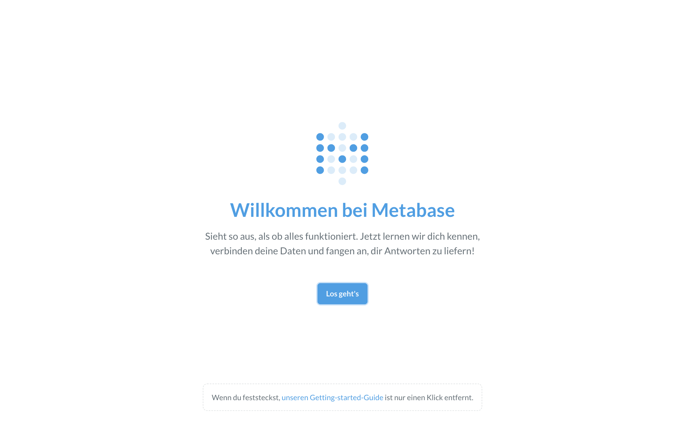
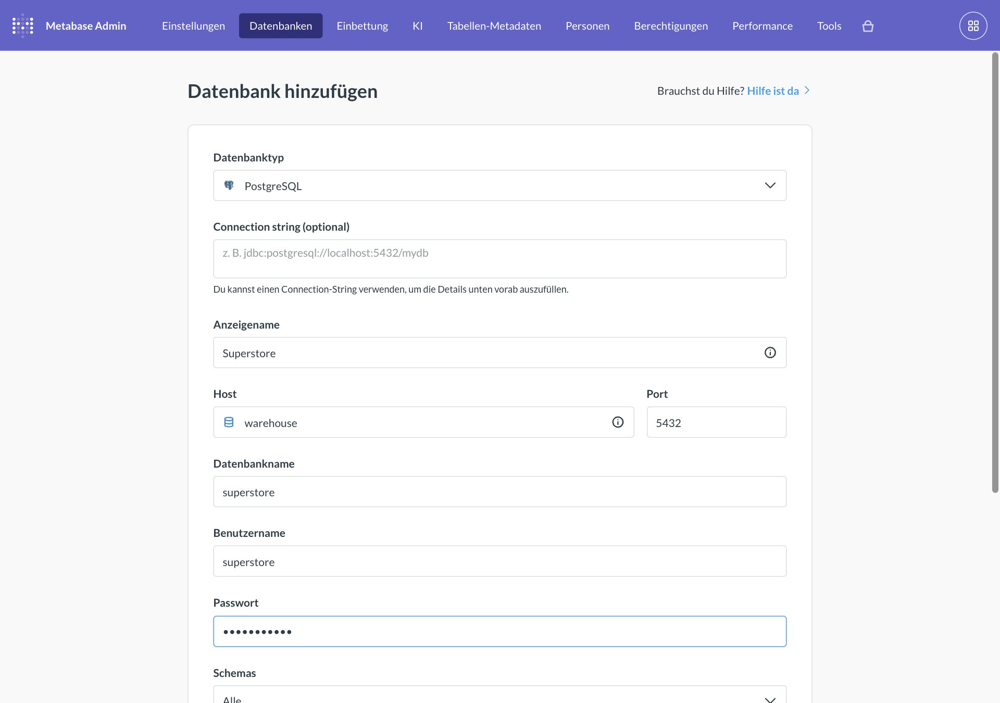
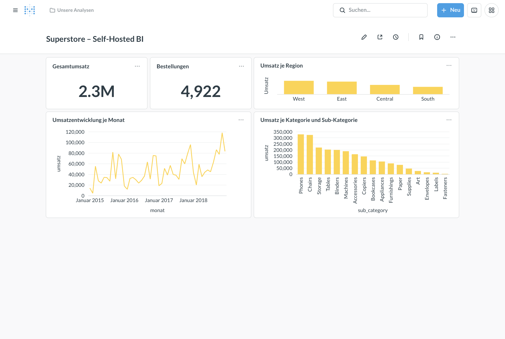

Was ist Digitale Souveränität?What is Digital Sovereignty?
Digitale Souveränität bezeichnet die Fähigkeit von Organisationen und Staaten, ihre digitale Infrastruktur selbst zu kontrollieren – von Hardware und Software bis hin zu Daten, Algorithmen und Plattformen (Floridi, 2020).Digital sovereignty refers to the ability of organizations and states to control their own digital infrastructure – from hardware and software to data, algorithms, and platforms (Floridi, 2020).
Die drei Säulen digitaler SouveränitätThree Pillars of Digital Sovereignty
- Datensouveränität: Kontrolle über Speicherort, Zugriff und Verarbeitung eigener DatenData sovereignty: Control over storage location, access, and processing of own data
- Technologische Souveränität: Unabhängigkeit von einzelnen Anbietern für kritische InfrastrukturTechnological sovereignty: Independence from single vendors for critical infrastructure
- Regulatorische Souveränität: Fähigkeit, eigene rechtliche Standards (DSGVO, Data Act) durchzusetzenRegulatory sovereignty: Ability to enforce own legal standards (GDPR, Data Act)
Auf EU-Ebene werden Initiativen wie GAIA-X, die European Cloud Initiative und der EU Data Act – Verordnung (EU) 2023/2854 – vorangetrieben, um europäische Datensouveränität gegenüber US-amerikanischen Hyperscalern (AWS, Azure, GCP) zu stärken. Auch der EU AI Act (2024) berührt die Souveränitätsfrage, indem er Transparenzpflichten für KI-Systeme fordert.At the EU level, initiatives such as GAIA-X, the European Cloud Initiative, and the EU Data Act – Regulation (EU) 2023/2854 – aim to strengthen European data sovereignty against US hyperscalers (AWS, Azure, GCP). The EU AI Act (2024) also touches on sovereignty by requiring transparency obligations for AI systems.
Für Business Intelligence stellen sich folgende Kernfragen:For Business Intelligence, the core questions are:
- Wo liegen meine Daten – auf welchem Server, in welchem Land?Where is my data stored – on which server, in which country?
- Wer kann theoretisch darauf zugreifen (Anbieter, Behörden, Dritte)?Who can theoretically access it (provider, authorities, third parties)?
- Bin ich bei einem Anbieter gesperrt (Lock-in)?Am I locked into a single vendor?
- Was passiert, wenn der Anbieter den Dienst einstellt oder die Preise erhöht?What happens if the provider discontinues the service or raises prices?
- Kann ich meine Daten und Dashboards vollständig exportieren?Can I fully export my data and dashboards?
Schrems II & EU-US Data Privacy Framework: Nach Schrems II (EuGH, 2020) ist der Transfer personenbezogener Daten in die USA ohne spezielle Schutzmaßnahmen rechtswidrig. Für Übermittlungen an US-Unternehmen, die am EU-US Data Privacy Framework (Angemessenheitsbeschluss 2023) teilnehmen, kann dieser Beschluss die Transfergrundlage bilden – ein zusätzliches Instrument ist dann nicht erforderlich. Bei nicht teilnehmenden Empfängern braucht es andere Instrumente, etwa Standardvertragsklauseln oder Binding Corporate Rules, je nach Konstellation ergänzt um eine Transferprüfung. Der Angemessenheitsbeschluss bleibt politisch und gerichtlich umstritten; welcher Pfad gilt, ist im Einzelfall und je Dienst zu klären.After Schrems II (CJEU, 2020), the transfer of personal data to the USA without special safeguards is unlawful. For transfers to US companies participating in the EU-US Data Privacy Framework (adequacy decision 2023), that decision can serve as the transfer basis – no additional instrument is then required. For non-participating recipients other instruments are needed, such as Standard Contractual Clauses or Binding Corporate Rules, complemented by a transfer assessment depending on the constellation. The adequacy decision remains politically and legally contested; which path applies has to be settled case by case and per service.
SaaS BI-Tools: Cloud Lock-inSaaS BI Tools: Cloud Lock-in
Cloud Lock-in entsteht, wenn der Wechsel zu einem alternativen Anbieter technisch oder wirtschaftlich prohibitiv wird. Im BI-Kontext sind proprietäre Datenmodelle, DAX/M-Formeln, Berechtigungsstrukturen und API-Abhängigkeiten die Haupttreiber. Plattformen wie Microsoft Fabric verstärken diesen Effekt: Wenn Ingestion, Transformation, Warehouse und Reporting gemeinsam auf OneLake liegen, wächst die Wechselhürde mit jedem zusätzlichen Workload.Cloud lock-in occurs when switching to an alternative provider becomes technically or economically prohibitive. In the BI context, proprietary data models, DAX/M formulas, permission structures, and API dependencies are the main drivers. Platforms such as Microsoft Fabric amplify this: once ingestion, transformation, warehousing and reporting all sit on OneLake, the switching barrier grows with every additional workload.
Total Cost of Ownership (TCO) bei BI-ToolsTotal Cost of Ownership (TCO) for BI Tools
- Direkte Kosten: Lizenzgebühren pro Nutzer oder Kapazität. Preise, Abrechnungsmodell und enthaltene Funktionen beim jeweiligen Anbieter prüfen.Direct costs: licence fees per user or capacity. Check pricing, billing models and included features with each vendor.
- Migrationskosten: Aufwand für Datenexport, Dashboard-Neubau, Schulung bei AnbieterwechselMigration costs: Effort for data export, dashboard rebuilding, training when switching providers
- Opportunitätskosten: Funktionen, die nur im Ökosystem des Anbieters verfügbar sind (z.B. Copilot in Power BI)Opportunity costs: Features only available within the vendor ecosystem (e.g., Copilot in Power BI)
- Risikokosten: Preiserhöhungen, Service-Einstellungen, regulatorische Konflikte (CLOUD Act)Risk costs: Price increases, service discontinuation, regulatory conflicts (CLOUD Act)
- Betriebskosten Self-Hosted: Server, Wartung, Updates, Monitoring – personelle Kapazität erforderlichSelf-hosted operations costs: Servers, maintenance, updates, monitoring – requires personnel capacity
Lock-in-Risiken:Lock-in risks:
- Plattform-Gravitation: Microsoft Fabric bündelt Data Factory, Warehouse, Spark und Power BI auf OneLake – ein Wechsel bedeutet dann nicht mehr nur Dashboards, sondern die gesamte Datenplattform zu migrierenPlatform gravity: Microsoft Fabric bundles Data Factory, Warehouse, Spark and Power BI on OneLake – switching then means migrating an entire data platform, not just dashboards
- Daten liegen beim Anbieter – US-amerikanische Anbieter wie Microsoft (Power BI), Google (Looker), Salesforce (Tableau). Datenregion, Subprozessoren, Supportzugriffe, Verschlüsselung und Transfermechanismus sind getrennt zu prüfen; eine EU-Region reduziert Risiken, beantwortet aber nicht alle FragenData stored with the provider – US-based vendors such as Microsoft (Power BI), Google (Looker), Salesforce (Tableau). Data region, subprocessors, support access, encryption and transfer mechanism must be checked separately; an EU region reduces risk but does not answer every question
- Proprietäre Formate: DAX (Power BI), VizQL (Tableau), LookML (Looker) – nicht portabelProprietary formats: DAX (Power BI), VizQL (Tableau), LookML (Looker) – not portable
- Behördlicher Zugriff nach US-Recht (CLOUD Act, FISA 702) ist bei US-Anbietern zu prüfen – wie stark er wirkt, hängt von Anbieter, Dienst, Region und Vertragsgestaltung ab und trifft nicht alle gleichermaßenGovernment access under US law (CLOUD Act, FISA 702) has to be assessed for US vendors – how far it reaches depends on vendor, service, region and contract, and does not affect all of them equally
- On-Premises-Optionen existieren: Power BI Report Server, Tableau Server, Qlik Sense EnterpriseOn-premises options exist: Power BI Report Server, Tableau Server, Qlik Sense Enterprise
Open-Source BI im ÜberblickOpen-Source BI Overview
Open-Source-BI-Tools verlagern die Kontrolle über Daten und Infrastruktur zu Ihnen – zusammen mit der Verantwortung für Betrieb, Updates und Sicherung. Entscheidend ist dabei das Lizenzmodell: Apache 2.0 erlaubt kommerzielle Nutzung und proprietäre Weiterentwicklung, sofern die Lizenz- und Hinweispflichten eingehalten werden. AGPL verpflichtet Betreiber einer veränderten, über ein Netzwerk angebotenen Fassung, den Nutzern dieser Fassung den korrespondierenden Quellcode zugänglich zu machen. MIT ist ähnlich permissiv wie Apache 2.0.Open-source BI tools shift control over data and infrastructure to you – together with the responsibility for operations, updates and backups. The license model is decisive: Apache 2.0 allows commercial use and proprietary derivative development, provided the licence and attribution obligations are met. AGPL requires operators of a modified version offered over a network to make the corresponding source code available to that version's users. MIT is similarly permissive to Apache 2.0.
Open-Source Alternativen im VergleichOpen-Source Alternatives Compared
| Tool | LizenzLicense | Docker | StärkenStrengths | Status |
|---|---|---|---|---|
| Apache Superset | Apache 2.0 | ✓ | SQL-first, große Community, Enterprise-readySQL-first, large community, enterprise-ready | ✅ Aktiv✅ Active |
| Metabase | AGPL 3.0 | ✓ | Intuitiv, ideal für Non-Techniker, eingebettete AnalytikIntuitive, great for non-technical users, embedded analytics | ✅ Aktiv✅ Active |
| Grafana | AGPL 3.0 | ✓ | Metriken & Monitoring, große Plugin-BibliothekMetrics & monitoring, large plugin library | ✅ Aktiv✅ Active |
| Plotly Dash | MIT | ✓ | Maximale Flexibilität, Python-native, volle KontrolleMaximum flexibility, Python-native, full control | ✅ Aktiv✅ Active |
| Lightdash | MIT | ✓ | dbt-nativ, Metrics Layer, modernes Data Stackdbt-native, metrics layer, modern data stack | ✅ Aktiv✅ Active |
| Evidence | MIT | ✓ | Code-as-BI: Markdown + SQL, Git-versioniertCode-as-BI: Markdown + SQL, Git-versioned | ✅ Aktiv✅ Active |
| Redash | BSD | ✓ | SQL-fokussiert, API-Zugriff, leichtgewichtigSQL-focused, API access, lightweight | ⚠️ Wartung⚠️ Maintenance |
Hinweis: Redash wurde 2020 von Databricks übernommen. Die gehostete Version wurde eingestellt; das Open-Source-Projekt wird von der Community weiter gepflegt, aber die Entwicklung hat sich deutlich verlangsamt.Note: Redash was acquired by Databricks in 2020. The hosted version was discontinued; the open-source project is community-maintained, but development has slowed significantly.
Lizenz-Tipp: Der unveränderte Betrieb einer AGPL-3.0-Anwendung (Metabase, Grafana) löst keine Pflicht aus. Wer die Anwendung ändert und über ein Netzwerk anbietet, muss deren Nutzern den korrespondierenden Quellcode zugänglich machen – das ist keine allgemeine Veröffentlichungspflicht gegenüber der Öffentlichkeit. Wer Anpassungen intern halten will, fährt mit Apache-2.0 oder MIT oft einfacher. Im Zweifel die Lizenz juristisch prüfen lassen.License tip: running an unmodified AGPL-3.0 application (Metabase, Grafana) triggers no obligation. If you modify it and offer it over a network, you must make the corresponding source available to those users – this is not a general duty to publish to the world. If you want to keep customisations internal, Apache-2.0 or MIT is usually simpler. When in doubt, have the licence reviewed.
Docker Setup: Self-Hosted Metabase
Mit Docker Compose lässt sich ein vollständiger Self-Hosted BI-Stack in wenigen Minuten aufsetzen. Das folgende Beispiel zeigt Metabase mit PostgreSQL als Metadatenbank.With Docker Compose, a complete self-hosted BI stack can be set up in minutes. The following example shows Metabase with PostgreSQL as the metadata database.
Starterpaket herunterladenDownload the starter package
Enthält die docker-compose.yml, init/01_schema.sql, init/02_import.sql, verify.sql, .env.example und eine README mit Sollwerten und Fehlerbildern. Der Stack importiert 9.800 Zeilen und liefert dieselben Zahlen wie pandas.Contains docker-compose.yml, init/01_schema.sql, init/02_import.sql, verify.sql, .env.example and a README with expected values and failure symptoms. The stack imports 9,800 rows and produces the same numbers as pandas.
# docker-compose.yml - Self-Hosted BI-Stack fuer Lab 06
# Compose Spec (v2) - der 'version'-Schluessel ist abgekuendigt.
#
# Drei Dienste, und die Trennung ist Absicht:
# metabase - die Anwendung
# postgres - Metabases EIGENE Metadaten (Fragen, Dashboards, Nutzer)
# warehouse - die Analysedatenbank mit den Superstore-Daten. Nur dieser
# Dienst ist nach aussen veroeffentlicht (Port 5433), damit
# psql, DBeaver oder pgAdmin hineinschauen koennen.
services:
metabase:
image: metabase/metabase:v0.63.13 # auf Patchstand pinnen, nie auf :latest
# Fuer echte Reproduzierbarkeit zusaetzlich den Digest festhalten:
# image: metabase/metabase@sha256:<digest>
ports:
- "3000:3000"
environment:
MB_DB_TYPE: postgres
MB_DB_DBNAME: metabase
MB_DB_HOST: postgres
MB_DB_USER: metabase
MB_DB_PASS: ${POSTGRES_PASSWORD}
depends_on:
postgres:
condition: service_healthy
warehouse:
condition: service_healthy
restart: unless-stopped
postgres:
image: postgres:17.8-alpine
environment:
POSTGRES_USER: metabase
POSTGRES_PASSWORD: ${POSTGRES_PASSWORD}
POSTGRES_DB: metabase
volumes:
- metabase_meta:/var/lib/postgresql/data
healthcheck:
test: ["CMD-SHELL", "pg_isready -U metabase"]
interval: 5s
timeout: 5s
retries: 10
restart: unless-stopped
warehouse:
image: postgres:17.8-alpine
ports:
- "5433:5432" # aussen 5433, damit ein lokales Postgres nicht kollidiert
environment:
POSTGRES_USER: superstore
POSTGRES_PASSWORD: ${WAREHOUSE_PASSWORD}
POSTGRES_DB: superstore
volumes:
- warehouse_data:/var/lib/postgresql/data
- ./init:/docker-entrypoint-initdb.d:ro # laeuft einmalig beim ersten Start
- ./train.csv:/data/train.csv:ro # damit COPY die Datei sieht
healthcheck:
test: ["CMD-SHELL", "pg_isready -U superstore -d superstore"]
interval: 5s
timeout: 5s
retries: 10
restart: unless-stopped
volumes:
metabase_meta:
warehouse_data:
# docker-compose.yml - self-hosted BI stack for Lab 06
# Compose Spec (v2) - the 'version' key is deprecated.
#
# Three services, and the split is deliberate:
# metabase - the application
# postgres - Metabase's OWN metadata (questions, dashboards, users)
# warehouse - the analytical database holding the Superstore data. Only
# this service is published (port 5433) so that psql, DBeaver
# or pgAdmin can look inside.
services:
metabase:
image: metabase/metabase:v0.63.13 # pin to a patch version, never :latest
# For real reproducibility pin the digest as well:
# image: metabase/metabase@sha256:<digest>
ports:
- "3000:3000"
environment:
MB_DB_TYPE: postgres
MB_DB_DBNAME: metabase
MB_DB_HOST: postgres
MB_DB_USER: metabase
MB_DB_PASS: ${POSTGRES_PASSWORD}
depends_on:
postgres:
condition: service_healthy
warehouse:
condition: service_healthy
restart: unless-stopped
postgres:
image: postgres:17.8-alpine
environment:
POSTGRES_USER: metabase
POSTGRES_PASSWORD: ${POSTGRES_PASSWORD}
POSTGRES_DB: metabase
volumes:
- metabase_meta:/var/lib/postgresql/data
healthcheck:
test: ["CMD-SHELL", "pg_isready -U metabase"]
interval: 5s
timeout: 5s
retries: 10
restart: unless-stopped
warehouse:
image: postgres:17.8-alpine
ports:
- "5433:5432" # 5433 outside, so a local Postgres does not clash
environment:
POSTGRES_USER: superstore
POSTGRES_PASSWORD: ${WAREHOUSE_PASSWORD}
POSTGRES_DB: superstore
volumes:
- warehouse_data:/var/lib/postgresql/data
- ./init:/docker-entrypoint-initdb.d:ro # runs once on first start
- ./train.csv:/data/train.csv:ro # so that COPY can see the file
healthcheck:
test: ["CMD-SHELL", "pg_isready -U superstore -d superstore"]
interval: 5s
timeout: 5s
retries: 10
restart: unless-stopped
volumes:
metabase_meta:
warehouse_data:
.env
# .env (im selben Verzeichnis wie docker-compose.yml)
# Diese Datei NIE ins Git-Repo committen -> in .gitignore aufnehmen!
POSTGRES_PASSWORD=BitteAendern_Metabase123!
WAREHOUSE_PASSWORD=BitteAendern_Warehouse123!
# .env (in the same directory as docker-compose.yml)
# NEVER commit this file to the Git repo -> add it to .gitignore!
POSTGRES_PASSWORD=ChangeMe_Metabase123!
WAREHOUSE_PASSWORD=ChangeMe_Warehouse123!
Tipp:Tip: Voraussetzungen: Docker Desktop installiert. Download: https://www.docker.com/products/docker-desktopPrerequisites: Docker Desktop installed. Download: https://www.docker.com/products/docker-desktop
Stack starten und prüfen:Start and verify the stack:
# .env-Datei aus dem Block oben anlegen (Passwort anpassen!):
nano .env # oder: notepad .env / code .env
# Stack starten:
docker compose up -d
# Status prüfen:
docker compose ps
# Logs anzeigen:
docker compose logs -f metabase
# Zugriff: http://localhost:3000
# Erster Start: Einrichtungsassistent öffnet sich
# Create the .env file from the block above (change the password!):
nano .env # or: notepad .env / code .env
# Start the stack:
docker compose up -d
# Check status:
docker compose ps
# View logs:
docker compose logs -f metabase
# Access: http://localhost:3000
# First start: the setup wizard opens

Kursdatensatz in PostgreSQL importierenImport the course dataset into PostgreSQL
Metabase braucht Daten, an die es sich anschließen kann. Der Stack bringt dafür einen zweiten PostgreSQL-Dienst mit: warehouse. Die Trennung ist Absicht – postgres hält Metabases eigene Metadaten (Fragen, Dashboards, Nutzer), warehouse hält die Analysedaten. Analysedaten gehören nicht in die Metadatenbank des Werkzeugs.Metabase needs data to connect to. The stack ships a second PostgreSQL service for that: warehouse. The split is deliberate - postgres holds Metabase’s own metadata (questions, dashboards, users), warehouse holds the analytical data. Analytical data does not belong in the tool’s metadata database.
Daten für den ImportData for the import
Der warehouse-Dienst importiert train.csv beim ersten Start. Die Datei muss dazu neben der docker-compose.yml liegen – der Mount erwartet sie dort. Es ist derselbe Kursdatensatz wie in Lab 04 und 05: 9.800 Zeilen, TT/MM/JJJJ, Encoding latin-1.The warehouse service imports train.csv on first start. The file must sit next to docker-compose.yml – that is where the mount expects it. It is the same course dataset as in Labs 04 and 05: 9,800 rows, DD/MM/YYYY, encoding latin-1.
Quelle: Superstore Sales Dataset von Rohit Sahoo (Kaggle), Lizenz GPL 2. Das Starterpaket enthält die CSV bewusst nicht – sie liegt einmal unter data/ und wird von dort kopiert.Source: Superstore Sales Dataset by Rohit Sahoo (Kaggle), licensed GPL 2. The starter package deliberately does not bundle the CSV – it lives once under data/ and is copied from there.
Vorbereiten und startenPrepare and start
- Starterpaket lab-06-stack.zip herunterladen und entpacken.Download and unpack the starter package lab-06-stack.zip.
- .env.example nach .env kopieren und beide Passwörter ändern.Copy .env.example to .env and change both passwords.
- train.csv (Download oben) neben die docker-compose.yml legen – der Mount erwartet sie dort.Place train.csv (download above) next to docker-compose.yml – the mount expects it there.
- docker compose up -d ausfuehren. Der Dienst warehouse legt die Tabelle an und importiert die CSV beim ersten Start von selbst.Run docker compose up -d. The warehouse service creates the table and imports the CSV by itself on first start.
Tabelle: init/01_schema.sqlTable: init/01_schema.sql
-- init/01_schema.sql - laeuft beim ersten Start automatisch
CREATE TABLE IF NOT EXISTS orders (
row_id integer PRIMARY KEY,
order_id text NOT NULL,
order_date date NOT NULL,
ship_date date NOT NULL,
ship_mode text NOT NULL,
customer_id text NOT NULL,
customer_name text NOT NULL,
segment text NOT NULL,
country text NOT NULL,
city text NOT NULL,
state text NOT NULL,
postal_code text, -- NULL-faehig: elf Werte fehlen
region text NOT NULL,
product_id text NOT NULL,
category text NOT NULL,
sub_category text NOT NULL,
product_name text NOT NULL,
sales numeric(12,4) NOT NULL
);
-- Zwei Entscheidungen, die man begruenden koennen sollte:
-- postal_code ist text, nicht integer. US-PLZ haben fuehrende Nullen
-- ("01013"); als Zahl gespeichert gingen sie verloren.
-- sales ist numeric(12,4), nicht float und nicht numeric(12,2). Die CSV
-- enthaelt Werte wie 957,5775. Mit zwei Nachkommastellen rundet Postgres
-- schon beim Import, und die Gesamtsumme weicht um rund 20 Cent von der
-- pandas- und der Power-BI-Zahl ab.
CREATE INDEX IF NOT EXISTS orders_order_date_idx ON orders (order_date);
CREATE INDEX IF NOT EXISTS orders_category_idx ON orders (category, sub_category);
CREATE INDEX IF NOT EXISTS orders_region_state_idx ON orders (region, state);
-- init/01_schema.sql - runs automatically on first start
CREATE TABLE IF NOT EXISTS orders (
row_id integer PRIMARY KEY,
order_id text NOT NULL,
order_date date NOT NULL,
ship_date date NOT NULL,
ship_mode text NOT NULL,
customer_id text NOT NULL,
customer_name text NOT NULL,
segment text NOT NULL,
country text NOT NULL,
city text NOT NULL,
state text NOT NULL,
postal_code text, -- nullable: eleven values are missing
region text NOT NULL,
product_id text NOT NULL,
category text NOT NULL,
sub_category text NOT NULL,
product_name text NOT NULL,
sales numeric(12,4) NOT NULL
);
-- Two decisions you should be able to justify:
-- postal_code is text, not integer. US ZIP codes have leading zeros
-- ("01013"); stored as a number they would be lost.
-- sales is numeric(12,4), not float and not numeric(12,2). The CSV
-- contains values such as 957.5775. With two decimal places Postgres
-- rounds during import, and the total then differs by about 20 cents
-- from the pandas and Power BI figures.
CREATE INDEX IF NOT EXISTS orders_order_date_idx ON orders (order_date);
CREATE INDEX IF NOT EXISTS orders_category_idx ON orders (category, sub_category);
CREATE INDEX IF NOT EXISTS orders_region_state_idx ON orders (region, state);
Import: init/02_import.sql
-- init/02_import.sql - laeuft direkt nach dem Schema
--
-- COPY liest serverseitig, die Datei muss also IM Container liegen. Dafuer
-- ist der Mount ./train.csv -> /data/train.csv in der Compose-Datei da.
-- Wer keine Datei in den Container legen kann, nimmt \copy in psql; dann
-- liest der Client.
--
-- Das Datumsformat ist TT/MM/JJJJ. Ohne DateStyle bricht Postgres bei jedem
-- Tag > 12 ab - dieselbe Falle wie dayfirst=True in pandas.
SET datestyle = 'ISO, DMY';
COPY orders (
row_id, order_id, order_date, ship_date, ship_mode,
customer_id, customer_name, segment, country, city, state,
postal_code, region, product_id, category, sub_category,
product_name, sales
)
FROM '/data/train.csv'
WITH (FORMAT csv, HEADER true, ENCODING 'LATIN1');
-- Erfolgskontrolle: bricht ab, wenn die Zeilenzahl nicht stimmt.
DO $$
DECLARE n bigint;
BEGIN
SELECT count(*) INTO n FROM orders;
IF n <> 9800 THEN
RAISE EXCEPTION 'Import fehlgeschlagen: % Zeilen statt 9800', n;
END IF;
RAISE NOTICE 'Import ok: % Zeilen', n;
END $$;
-- init/02_import.sql - runs right after the schema
--
-- COPY reads server-side, so the file has to be INSIDE the container. That
-- is what the mount ./train.csv -> /data/train.csv in the compose file is
-- for. If you cannot place a file in the container, use \copy in psql;
-- then the client reads it.
--
-- The date format is DD/MM/YYYY. Without DateStyle, Postgres fails on every
-- day > 12 - the same trap as dayfirst=True in pandas.
SET datestyle = 'ISO, DMY';
COPY orders (
row_id, order_id, order_date, ship_date, ship_mode,
customer_id, customer_name, segment, country, city, state,
postal_code, region, product_id, category, sub_category,
product_name, sales
)
FROM '/data/train.csv'
WITH (FORMAT csv, HEADER true, ENCODING 'LATIN1');
-- Success check: aborts if the row count is wrong.
DO $$
DECLARE n bigint;
BEGIN
SELECT count(*) INTO n FROM orders;
IF n <> 9800 THEN
RAISE EXCEPTION 'Import failed: % rows instead of 9800', n;
END IF;
RAISE NOTICE 'Import ok: % rows', n;
END $$;
Alles unter init/ läuft genau einmal – nämlich solange das Volume leer ist. Ein zweites docker compose up importiert nicht doppelt. Wer die Skripte ändert, braucht deshalb docker compose down -v, sonst wirkt die Änderung nicht.Everything under init/ runs exactly once - namely while the volume is still empty. A second docker compose up does not import twice. If you change the scripts you therefore need docker compose down -v, otherwise the change has no effect.
Erfolgskontrolle und AufräumenSuccess check and cleanup
# Erfolgskontrolle - laeuft gegen den warehouse-Container
docker compose logs warehouse | grep "Import ok"
# -> NOTICE: Import ok: 9800 Zeilen
docker compose exec -T warehouse \
psql -U superstore -d superstore -f - < verify.sql
# Sollausgabe:
# zeilen 9800
# bestellungen 4922
# gesamtumsatz 2261536.78
# fehlende_plz 11
# Zeitraum 2015-01-03 bis 2018-12-30
# 2015 479856.21 | 2016 459436.01 | 2017 600192.55 | 2018 722052.02
#
# Dieselben Zahlen liefern der pandas-Block aus Lab 05 und die DAX-Measures
# in Power BI. Weichen sie ab: Datumsformat oder Encoding pruefen.
# Aufraeumen
docker compose down # Container weg, Daten bleiben
docker compose down -v # auch die Volumes - der Import laeuft dann neu
# Success check - runs against the warehouse container
docker compose logs warehouse | grep "Import ok"
# -> NOTICE: Import ok: 9800 rows
docker compose exec -T warehouse \
psql -U superstore -d superstore -f - < verify.sql
# Expected output:
# rows 9800
# orders 4922
# total_sales 2261536.78
# missing_zip 11
# period 2015-01-03 to 2018-12-30
# 2015 479856.21 | 2016 459436.01 | 2017 600192.55 | 2018 722052.02
#
# The pandas block from Lab 05 and the DAX measures in Power BI produce the
# same numbers. If they differ: check the date format or the encoding.
# Cleanup
docker compose down # containers gone, data stays
docker compose down -v # volumes too - the import then runs again
Datenbank in Metabase eintragenRegister the database in Metabase: Einstellungen → Datenbanken → Datenbank hinzufügen: Typ PostgreSQL, Host warehouse, Port 5432, Datenbank superstore, Benutzer superstore, Passwort aus der .env. Host ist warehouse, nicht localhost: Metabase läuft in einem eigenen Container, dort wäre localhost Metabase selbst. Im Compose-Netzwerk erreichen sich die Dienste über ihren Dienstnamen und den Container-Port 5432 – nicht über den nach außen veröffentlichten Port 5433. Vom eigenen Rechner aus gilt umgekehrt localhost:5433.Settings → Databases → Add database: type PostgreSQL, host warehouse, port 5432, database superstore, user superstore, password from .env. The host is warehouse, not localhost: Metabase runs in its own container, where localhost would be Metabase itself. Inside the compose network the services reach each other by service name and container port 5432 - not via the published port 5433. From your own machine it is the other way round: localhost:5433.

Zeitbedarf: 10-20 Minuten, bis der Stack steht (davon der größte Teil Image-Download), danach 45-90 Minuten für Onboarding und Dashboards.Time needed: 10-20 minutes until the stack is up (mostly image download), then 45-90 minutes for onboarding and dashboards.
Selbstcheck (1 Minute)Self-check (1 minute)
- docker compose ps zeigt metabase, postgres und warehouse als running.docker compose ps shows metabase, postgres and warehouse as running.
- postgres und warehouse stehen auf healthy – sonst startet Metabase gar nicht erst.postgres and warehouse are healthy – otherwise Metabase will not start at all.
- Die Logs von warehouse enthalten „Import ok: 9800 Zeilen“.The warehouse logs contain “Import ok: 9800 rows”.
- verify.sql liefert 9800 Zeilen, 4922 Bestellungen und Gesamtumsatz 2261536.78.verify.sql returns 9800 rows, 4922 orders and total revenue 2261536.78.
- http://localhost:3000 zeigt den Einrichtungsassistenten.http://localhost:3000 shows the setup wizard.
- Typischer Fehler: in Metabase localhost statt warehouse als Host – damit sucht Metabase in sich selbst.Common error: using localhost instead of warehouse as the host in Metabase – it then looks inside itself.
- Aufräumen: docker compose down beendet den Stack, down -v entfernt auch die Daten.Cleanup: docker compose down stops the stack, down -v also removes the data.
Sicherheit im Self-Hosted SetupSecurity for Self-Hosted Setups
- HTTPS via Reverse Proxy (Traefik, Caddy oder nginx) – niemals Metabase direkt ohne TLS exponierenHTTPS via reverse proxy (Traefik, Caddy, or nginx) – never expose Metabase directly without TLS
- Starke Passwörter und .env-Dateien statt Klartext in docker-compose.ymlStrong passwords and .env files instead of plaintext in docker-compose.yml
- Regelmäßige Updates: Metabase-Image auf dieselbe Version pinnen wie im Compose-Beispiel (v0.63.13), aber Security-Patches zeitnah einspielenRegular updates: pin the Metabase image to the same version as the compose example (v0.63.13), but apply security patches promptly
- Backup-Strategie: PostgreSQL-Daten regelmäßig sichern (pg_dump)Backup strategy: Regularly back up PostgreSQL data (pg_dump)
- Netzwerk-Isolation: Docker-Netzwerke nutzen, nur Port 443 (HTTPS) nach außen öffnenNetwork isolation: Use Docker networks, only expose port 443 (HTTPS) externally
DSGVO ChecklisteGDPR Checklist
Vor dem Einsatz von BI-Tools mit personenbezogenen Daten müssen folgende Punkte geprüft und dokumentiert werden (gemäß DSGVO und EU Data Act):Before using BI tools with personal data, the following points must be checked and documented (per GDPR and EU Data Act):
- Verarbeitungsverzeichnis angelegt (Art. 30 DSGVO)Record of processing activities created (Art. 30 GDPR)
- Auftragsverarbeitungsvertrag (AVV) mit Cloud-Anbieter geschlossenData processing agreement (DPA) signed with cloud provider
- Datentransfer in Drittländer dokumentiert und gerechtfertigt (SCCs + TIA)Data transfers to third countries documented and justified (SCCs + TIA)
- Datenschutzfolgenabschätzung (DSFA) bei sensiblen Daten durchgeführtData protection impact assessment (DPIA) for sensitive data completed
- Löschkonzept und Aufbewahrungsfristen für alle gespeicherten Daten dokumentiertDeletion concept and retention periods for all stored data documented
- Datenschutzbeauftragter informiert (falls erforderlich, Art. 37 DSGVO)Data protection officer informed (if required, Art. 37 GDPR)
- Technische und organisatorische Maßnahmen (TOMs) dokumentiert (Art. 32 DSGVO)Technical and organizational measures (TOMs) documented (Art. 32 GDPR)
- Betroffenenrechte sichergestellt: Auskunft, Berichtigung, Löschung, DatenportabilitätData subject rights ensured: Access, rectification, erasure, portability
Entscheidungsmatrix: Welches Tool wann?Decision Matrix: Which Tool When?
| SzenarioScenario | EmpfehlungRecommendation | BegründungRationale |
|---|---|---|
| Kleines Team, keine IT-AbteilungSmall team, no IT department | SaaS (Power BI, Tableau Cloud) | Geringster Betriebsaufwand, schnell produktivLowest operational overhead, quickly productive |
| Personenbezogene Daten (HR, Kunden)Personal data (HR, customers) | Metabase / Superset self-hosted | EU/EWR-Hosting vereinfacht die Risikolage; Drittlandtransfer nur mit zulässigem TransfermechanismusEU/EEA hosting simplifies the risk picture; third-country transfer only with a valid transfer mechanism |
| Komplexe Custom-DashboardsComplex custom dashboards | Plotly Dash | Python-native, volle Kontrolle über Design und LogikPython-native, full control over design and logic |
| Öffentlicher Sektor / BehördenPublic sector / government | Open Source (häufig bevorzugt)Open Source (often preferred) | Interoperable Europe Act: bei objektiver Gleichwertigkeit offene Lösungen priorisieren – keine pauschale PflichtInteroperable Europe Act: prioritise open solutions where objectively equivalent – not a blanket obligation |
| Moderner dbt-basierter Data StackModern dbt-based data stack | Lightdash / Evidence | Nahtlose dbt-Integration, Metrics Layer, Git-WorkflowsSeamless dbt integration, metrics layer, Git workflows |
| Startup, schnelles DeploymentStartup, fast deployment | Metabase + Docker | Stack läuft in 5–15 Min. bei vorbereiteter Umgebung, große CommunityStack runs in 5–15 min. with a prepared environment, large community |
| Konzern mit Microsoft-ÖkosystemEnterprise with Microsoft ecosystem | Power BI (+ Report Server) | Beste Integration, Copilot, Enterprise-SupportBest integration, Copilot, enterprise support |
| Monitoring & DevOps-MetrikenMonitoring & DevOps metrics | Grafana | Standard für Infrastruktur-Monitoring, AlertingStandard for infrastructure monitoring, alerting |
AbschlussprojektFinal Project
Bonus-Projekt: Self-Hosted BI-StackBonus Project: Self-Hosted BI Stack
Bauen Sie einen vollständigen Self-Hosted BI-Stack auf Ihrem lokalen Rechner:Build a complete self-hosted BI stack on your local machine:
- Docker Desktop installieren und grundlegende Docker-Befehle testenInstall Docker Desktop and test basic Docker commands
- docker-compose.yml für Metabase + PostgreSQL erstellenCreate docker-compose.yml for Metabase + PostgreSQL
- Stack starten und Metabase-Einrichtungsassistenten durchlaufenStart the stack and complete the Metabase setup wizard
- Superstore-Daten (train.csv, Download oben) als CSV in PostgreSQL importieren (z.B. via pgAdmin oder psql)Import Superstore data (train.csv, download above) as CSV into PostgreSQL (e.g., via pgAdmin or psql)
- 3 aussagekräftige Dashboards in Metabase erstellen (Umsatzentwicklung, Kategorien/Sub-Kategorien, Regionen) – der Datensatz enthält keine Gewinnspalte, Kennzahl ist SalesCreate 3 meaningful dashboards in Metabase (revenue over time, categories/sub-categories, regions) – the dataset has no profit column, the measure is Sales
- DSGVO-Checkliste für das Setup ausfüllen und dokumentierenComplete the GDPR checklist for your setup and document it
- Ergebnis: Screenshot + kurze Reflexion zu Vor-/Nachteilen vs. Power BIDeliverable: Screenshot + brief reflection on pros/cons vs. Power BI

YouTube-RessourcenYouTube Resources
Empfohlene Video-Ressourcen zu Open-Source BI, Docker und Datensouveränität:Recommended video resources on open-source BI, Docker, and data sovereignty:
YouTube
Externe Ziele: Die Links führen auf Kanalstartseiten bei YouTube. Im EU-Browser erscheint dort zuerst der Consent-Dialog, und der passende Beitrag muss auf dem Kanal noch gesucht werden. Bewusst Kanal statt Einzelvideo: einzelne Videos verschwinden, Kanäle bieten eine zentrale Anlaufstelle.External destinations: these links open channel landing pages on YouTube. In an EU browser the consent dialog appears first, and you still have to find the relevant video on the channel. Channels rather than single videos on purpose: individual videos disappear, channels provide a central starting point.
Metabase – Official Getting Started
Offizieller Metabase-Kanal mit Tutorials zu Installation, Fragen-Editor, Dashboards und Einbettung für Entwickler.Official Metabase channel with tutorials on installation, the question editor, dashboards, and embedding for developers.
Metabase auf YouTube →Metabase on YouTube →Apache Superset – Preset Channel
Preset (das Unternehmen hinter Superset) bietet Demos, Feature-Walkthroughs und Best Practices für SQL-basierte Analytik.Preset (the company behind Superset) offers demos, feature walkthroughs, and best practices for SQL-based analytics.
Preset (Superset) auf YouTube →Preset (Superset) on YouTube →TechWorld with Nana – Docker
Nana erklärt Docker von Grund auf: Container, Images, Docker Compose und praktische Anwendungsfälle – ideal als Vorbereitung für das Bonus-Projekt.Nana explains Docker from scratch: containers, images, Docker Compose, and practical use cases – ideal preparation for the bonus project.
TechWorld with Nana auf YouTube →TechWorld with Nana on YouTube →NetworkChuck – Docker & Self-Hosting
Eingängige Erklärungen zu Docker, Portainer, Self-Hosting und Netzwerk-Grundlagen – unterhaltsam und praxisnah.Engaging explanations of Docker, Portainer, self-hosting, and networking basics – entertaining and hands-on.
NetworkChuck auf YouTube →NetworkChuck on YouTube →Literatur: Floridi, L. (2020). „The Fight for Digital Sovereignty: What It Is, and Why It Matters, Especially for the EU.“ Philosophy & Technology, 33(3). | Bitkom (2023). „Leitfaden Cloud-Souveränität.“References: Floridi, L. (2020). "The Fight for Digital Sovereignty: What It Is, and Why It Matters, Especially for the EU." Philosophy & Technology, 33(3). | Bitkom (2023). "Cloud Sovereignty Guide."
Quiz
Testen Sie Ihr Wissen zu Digitaler Souveränität und Open-Source BI:Test your knowledge on Digital Sovereignty and Open-Source BI:
ZusammenfassungSummary
- Digitale Souveränität umfasst Daten-, Technologie- und regulatorische Souveränität (Floridi, 2020).Digital sovereignty encompasses data, technology, and regulatory sovereignty (Floridi, 2020).
- Cloud Lock-in entsteht durch proprietäre Formate, APIs und Ökosystem-Abhängigkeiten – TCO-Analyse hilft bei der Bewertung.Cloud lock-in arises from proprietary formats, APIs, and ecosystem dependencies – TCO analysis helps assess the situation.
- Der EU Data Act – VO (EU) 2023/2854 – und der AI Act stärken europäische Datensouveränität und Cloud-Wechselrechte.The EU Data Act – Regulation (EU) 2023/2854 – and the AI Act strengthen European data sovereignty and cloud switching rights.
- Open-Source BI (Superset, Metabase, Grafana, Dash, Lightdash, Evidence) verlagert Kontrolle und Betriebsverantwortung zu Ihnen – Lizenzmodelle beachten.Open-source BI (Superset, Metabase, Grafana, Dash, Lightdash, Evidence) shifts control and operational responsibility to you – mind the license models.
- Docker Compose ermöglicht schnelles Self-Hosted-Deployment – HTTPS und Backup-Strategie nicht vergessen.Docker Compose enables fast self-hosted deployment – don’t forget HTTPS and backup strategy.
- DSGVO-Compliance erfordert systematische Prüfung: AVV, SCCs, TIA, TOMs, Löschkonzept.GDPR compliance requires systematic checks: DPA, SCCs, TIA, TOMs, deletion concept.
- Tool-Wahl hängt vom Szenario ab: Team-Größe, Datentyp, regulatorische Anforderungen, vorhandener Tech-Stack.Tool choice depends on scenario: Team size, data type, regulatory requirements, existing tech stack.